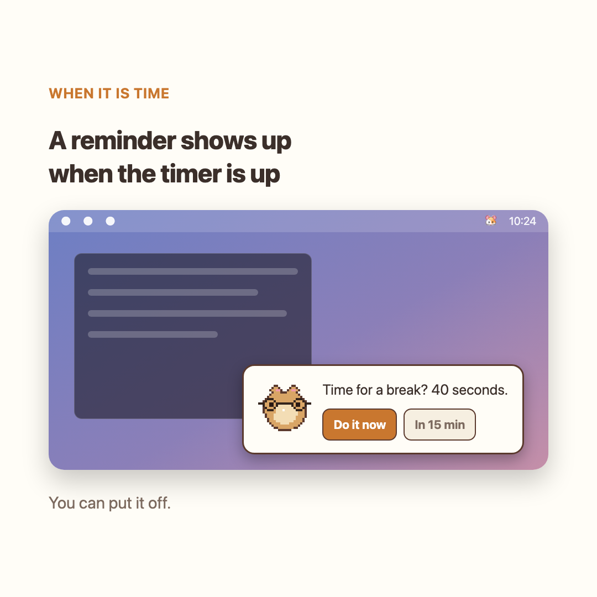
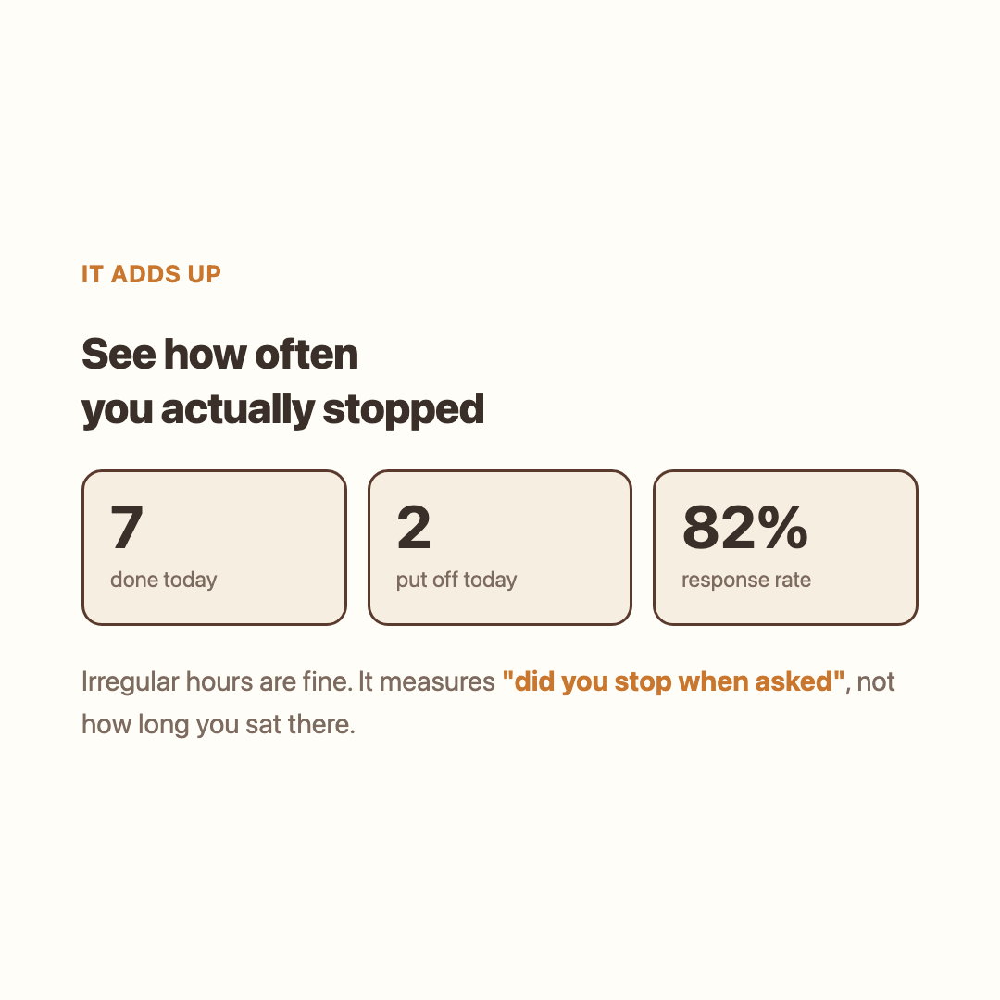

01
Busy? Snooze for 15 minutes.
A small reminder appears in the corner. If now is not a good time, snooze with one click.

Eye breaks · Desk stretches
A hamster reminds you every 20 minutes. Look into the distance, then stretch together.
Get it free Try without installing
Free · macOS / Windows
This is a Wanted AI Championship entry. Contest rules mean I'm showing a demo instead of a download. Try the demo above. A vote would mean a lot if you like it!
First launch: right-click → Open
When the reminder appears, take a break or try snoozing it.
A small reminder appears in the corner. If now is not a good time, snooze with one click.

Follow the hamster with your eyes, look into the distance, then stretch. Make a little time for eye care and movement at your desk.
Your weekly log shows the breaks you took and the reminders you snoozed.

Accessory preview
Try the Developer Set: a hoodie, headphones, coffee, and a keyboard.
The app is free. Additional accessory packs are being prepared for sale.
Nothing is broken. The app is unsigned, so a plain double-click gets blocked. Right-click (or control-click) → Open → Open again. Once per new version.
Use a reminder as a cue to change position or get up after sitting for a while. Hamstretch reminds you to take breaks and stretch.
Leave it on all day and you will not notice. It only draws a corner of the screen while idle, and uses the full screen during the 40 seconds.
Nowhere. What you did and when is appended to a single file on your computer. The app goes online once a day, only to check GitHub for a new version tag. Your history is never sent. Delete that file and the history is gone.
Yes, in beta. Pick Windows above to get it. Real-device testing just started, so there may be rough edges.
No. A small card just appears in the corner.
You can pick 10, 20, 30, 45 or 60 minutes in settings.
Choose "Move the hamster" from the menu bar and drag it anywhere. It stays there after a restart.
Turn it off in settings and it stays hidden until the next break. You need something to follow with your eyes.
It follows whichever screen your cursor is on. You can turn that off in settings.
English and Korean. Switch in settings.
It follows your system, and you can pin it to light or dark.
If you have not touched anything for three minutes, it skips the reminder. You will not come back to a pile of old alerts.
It is free.
Drag the app to the Trash. That is all.
Install it and choose your reminder interval.
Get it freeFree · macOS / Windows